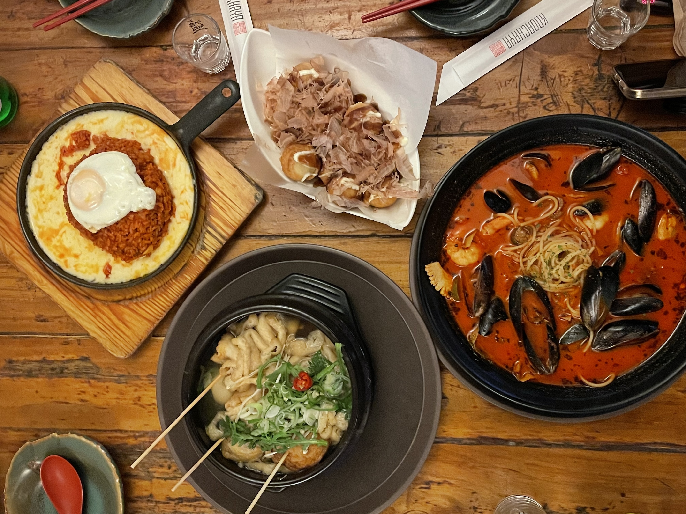
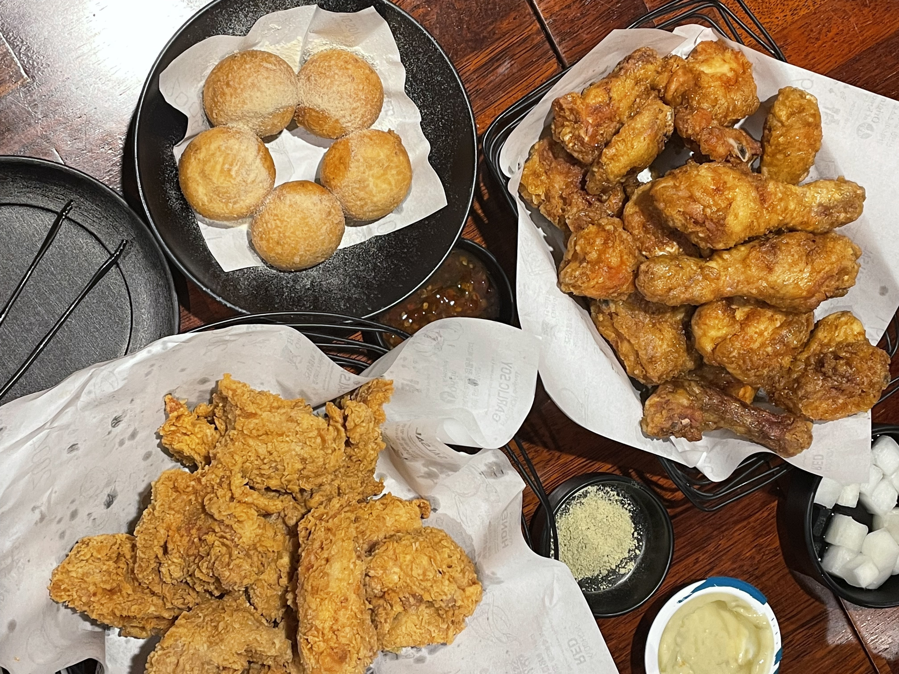

Top 5 Restaurant in Seoul, Korea
-
1. KODACHAYA

KODACHAYA is a Japanese-Korean fusion restaurant with a fantastic atmosphere. You can go to various stalls to order and grab drinks from the liquor cabinet. When your number is called, you can pick up your food! Every dish is delicious. My favorite is the cheese kimchi fried rice - a must-try! And the dessert, fried Oreo, is absolutely amazing... with hot, melty chocolate inside. We went all out on drinks, probably the most we've ever had in Korea. Drinking and chatting were so much fun!
-
2. Ungteori Saenggogi

For just over NT$300, you can enjoy all-you-can-eat barbecue! The all-you-can-eat menu includes pork belly, pork neck, miso soup, lettuce, and various side dishes. The grilled meat, especially when dipped in different sauces, is excellent! There are cumin, salt, and rice paste sauces, and they all go well with the grilled garlic – a perfect combination. With a variety of side dishes and lettuce, it never gets boring. The miso soup is also refreshing and tasty. It seems like Korean restaurants don't have time limits! We enjoyed our meal for two and a half hours... so much fun!
-
3. Jomaru Gamjatang

Five years ago, when I came to Korea and tried Jomaru Gamjatang, I couldn't forget its taste. The flavor is still exactly the same as before. The pork bone soup is rich and delicious! It goes perfectly with rice. Towards the end, it gets saltier, but you can ask the staff to add more broth. The pork on the bones is tender, and there's a generous amount of meat. It's easy to separate and eat! My favorite part is the potatoes – they are stewed to be soft and flavorful!
-
4. Tosokchon Samgyetang

The chicken at Tosokchon Samgyetang is incredibly tender and juicy!! Inside the chicken's belly, there's glutinous rice packed in. The glutinous rice absorbs the soup beautifully – it's amazing. The chicken soup is unbelievably delicious, a solid 100 points, and the aroma of ginseng complements it perfectly! I didn't dare to try the ginseng wine that came with it. The seafood pancake is generously sized, and the seafood is thoughtfully provided. It's fried to perfection – crispy and delicious, and the accompanying sauce is excellent!
-
5. Kyochon Chicken

Kyochon Chicken is a well-known Korean fried chicken chain, and I highly recommend the honey flavor! Kyochon Chicken offers sinfully delicious fried chicken with perfect color, aroma, and taste. The honey is drizzled on top, creating a perfect harmony between the sweet honey and the crispy fried chicken with each bite. In addition to the most popular "honey flavor," there is a mysterious black secret flavor. Despite its unassuming appearance, this flavor is made with soy sauce, black sesame, green chili pepper, and five-spice, making it extraordinary. It may look ordinary sitting there, but one bite is truly a revelation!